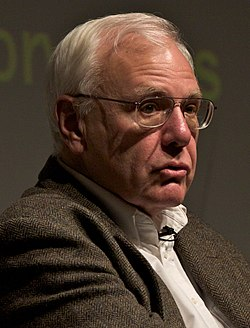

Charles P. Thacker | |
|---|---|
 Thacker in 2008 | |
| Born | Charles Patrick Thacker February 26, 1943 Pasadena, California, U.S. |
| Died | June 12, 2017 (aged 74) Palo Alto, California, U.S. |
| Education | University of California, Berkeley (BS) |
| Known for | Xerox Alto |
| Awards | IEEE John von Neumann Medal (2007) Turing Award (2009) Computer History Museum Fellow (2007)[1] Eckert–Mauchly Award (2017) [2] |
| Scientific career | |
| Fields | Computer Science |
| Institutions | Xerox, DEC, Microsoft Research |
Charles Patrick "Chuck" Thacker (February 26, 1943 – June 12, 2017) was an American pioneer computer designer.[3] He designed the Xerox Alto, which is the first computer that used a mouse-driven graphical user interface (GUI). In 2009, he won the ACM Turing Award.
Thacker was born in Pasadena, California, on February 26, 1943.[4] His father was Ralph Scott Thacker, born 1906, an electrical engineer (Caltech class of 1928[5]) in the aeronautical industry.[6][7][8][9][10] His mother was the former (Mattie) Fern Cheek, born 1922 in Oklahoma, a cashier and secretary, who soon raised their two sons on her own.[11]
He received his B.S. in physics[12] from the University of California, Berkeley in 1967. He then joined the university's "Project Genie" in 1968, which developed the pioneering Berkeley Timesharing System on the SDS 940.[13] Butler Lampson, Thacker, and others then left to form the Berkeley Computer Corporation, where Thacker designed the processor and memory system. While BCC was not commercially successful, this group became the core technologists in the Computer Systems Laboratory at Xerox Palo Alto Research Center (PARC).[4]
Thacker worked in the 1970s and 1980s at the PARC, where he served as project leader of the Xerox Alto personal computer system,[14] was co-inventor of the Ethernet LAN, and contributed to many other projects, including the first laser printer.
In 1983, Thacker was a founder of the Systems Research Center (SRC) of Digital Equipment Corporation (DEC), and in 1997, he joined Microsoft Research to help establish Microsoft Research Cambridge in Cambridge, England.
After returning to the United States, Thacker designed the hardware for Microsoft's Tablet PC, based on his experience with the "interim Dynabook" at PARC, and later the Lectrice, a pen-based hand-held computer at DEC SRC.
From 2006–2010 Thacker was a research contributor to the Berkeley Research Accelerator for Multiple Processors (RAMP) based upon the Berkeley Emulation Engine FPGA platform, which sought to explore new processor designs through massive emulation. He advised and consulted on the follow-on BEE platforms, the BEE2 and BEE3, and in turn used the hardware for his own research explorations.
Because the impetus for the RISC-V development was the paucity of open-source processor designs for the RAMP project (both Asanovic and Patterson were PIs), it is fitting that Thacker played a role in this important future technology.
Thacker died of complications from esophageal cancer on June 12, 2017, in Palo Alto, California, aged 74.[15]
In 1994, he was inducted as a Fellow of the Association for Computing Machinery.[16]
In 1996, he was named a Distinguished Alumnus in Computer Science at U.C. Berkeley.[17]
In 2004, he won the Charles Stark Draper Prize together with Alan C. Kay, Butler W. Lampson, and Robert W. Taylor.[18]
In 2007, he won the IEEE John von Neumann Medal.[12]
In 2007, he was inducted as a Fellow of the Computer History Museum for "leading development of the Xerox PARC Alto, and for innovations in networked personal computer systems and laser printing technologies."[19]
In 2010, he was named by the Association for Computing Machinery as the recipient of the 2009 Turing Award[20][21] in recognition of his pioneering design and realization of the Alto, the first modern personal computer, and in addition for his contributions to the Ethernet and the tablet computer.
Thacker received an honorary doctorate from the Swiss Federal Institute of Technology[12] and was a Technical Fellow at Microsoft.[12]
"This guy is a real genius," says Alan Kay, a researcher who worked with Thacker at PARC and a fellow Turing Award winner. "We don't like to sling that word around in our field, but he is one. He is magic."
.jpg){kind=link}